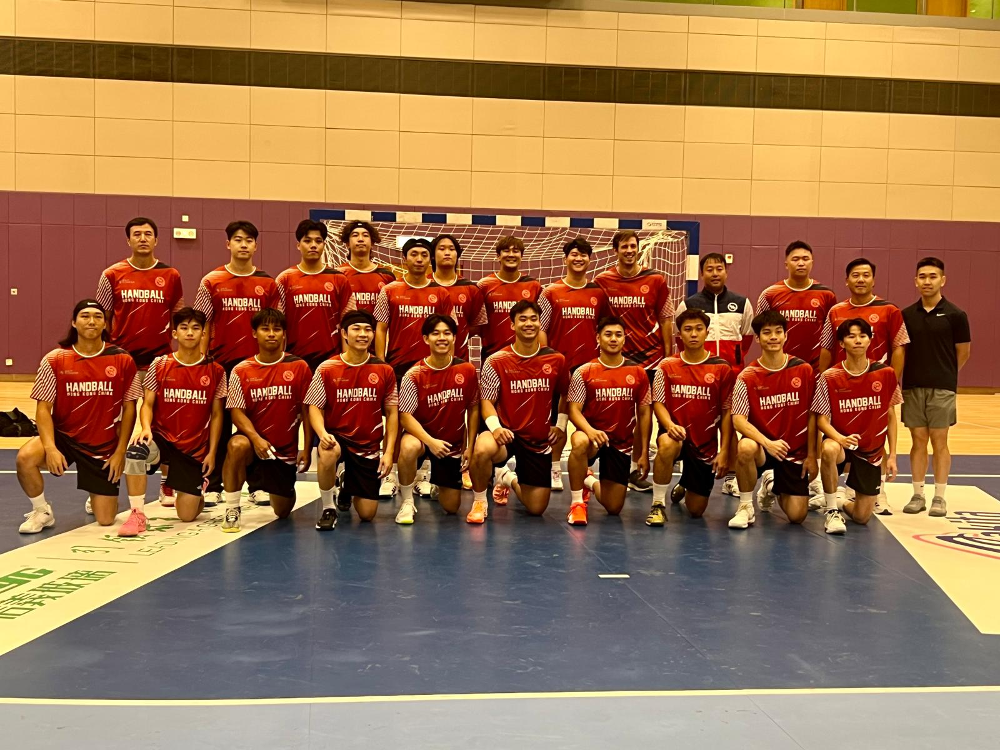

中國手球超級聯賽總決賽首度在港上演 港隊主場出擊明鬥上海
China Handball Super League Finals Make Hong Kong Debut as Hosts Open Against Shanghai
中国手球超级联赛总决赛首度在港上演 港队主场出击明斗上海
「2025-2026中國手球超級聯賽」男子組第四階段總決賽明日（23日）起一連十日在馬鞍山體育館舉行，是這項全國聯賽首度落戶香港。港隊以東道主身份首次參賽，明晚8時首戰上海，總決賽日於11月1日舉行。
今次賽事雲集八支球隊，除東道主香港外，還有廣東、北京、江蘇、安徽、山東紫光優健、上海及國家U20聯隊。賽程相當密集，港隊在十日內先進行七輪賽事，連同其後淘汰賽，最多要應付九場比賽，對體能是一大考驗。總教練許文邦表示，相信隊員體力足以應付連場硬仗，但臨場陣容調動必須得宜，亦期望去年全運會時的主場球迷再次入場，為港隊打氣。
教練魏得甘早前剛續簽教練合約，他指出，港隊自全運會後有多名經驗豐富的主力退役，補入了不少年輕球員；球隊今年先後到歐洲比賽及集訓，備戰算得上充足，不過比賽仍需要一點運氣眷顧。
隊長謝永輝表示，全運會後球隊加入了八名新隊員，陣容雖新，但仍然充滿活力和能量，他很期待再一次在主場作賽。球員李少聰則為自己定下晉身三甲的目標，又指馬鞍山體育館與球迷距離親近，現場氣氛的熾熱程度絕對不會輸給啟德。港隊上下認為，今次對手實力比全運會時所遇到的更強，首次出戰中國手球超級聯賽，將是難得的磨練機會。
港隊賽程（馬鞍山體育館）
10月23日（五）20:00 上海 對 香港
10月24日（六）14:00 香港 對 安徽
10月25日（日）16:00 香港 對 北京
10月27日（二）17:00 江蘇 對 香港
10月28日（三）20:00 香港 對 山東紫光優健
10月30日（五）20:00 國家U20聯隊 對 香港
10月31日（六）14:00 香港 對 廣東
11月1日（日） 總決賽日